vignettes/advanced/ggplot.flowSet.1d.Rmd
ggplot.flowSet.1d.Rmdggcyto makes ggplot2 to be able to work with Cytometry data, namely flowSet/ncdfFlowSet or flowFrame S4 objects.
library(ggcyto) data(GvHD) fs <- GvHD[subset(pData(GvHD), Patient %in%5:7 & Visit %in% c(5:6))[["name"]]] fr <- fs[[1]]
# histogram at raw scale p <- ggplot(fr, aes(x = `FL1-H`)) p + geom_histogram()
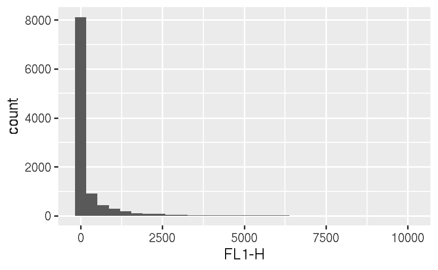
# customize border colors and log scale p + geom_histogram(colour = "white") + scale_x_log10()
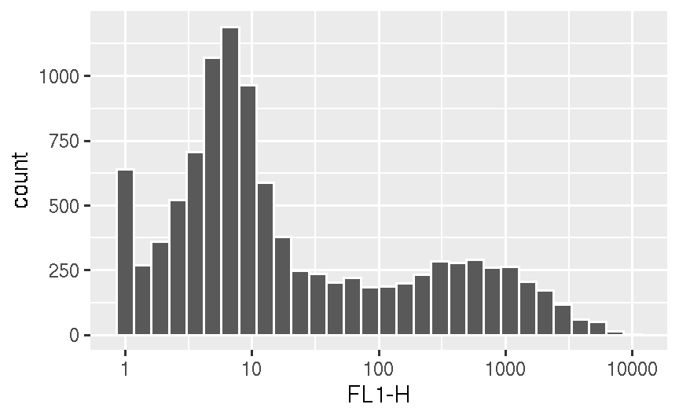
# change the bin width p + geom_histogram(colour = "white", binwidth = 1/20) + scale_x_log10()
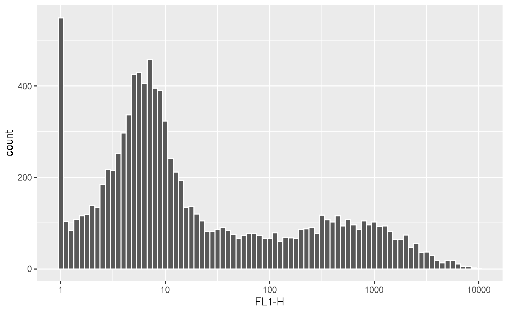
# logicle scale with default parameters setting (e.g. t = 262144) p <- p + geom_histogram(colour = "white") p + scale_x_logicle()
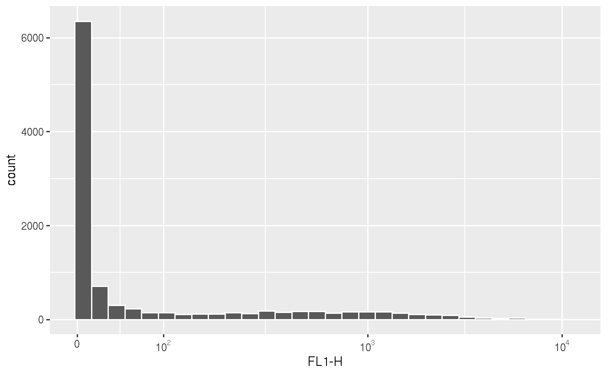
# logicle scale with customized parameter p + scale_x_logicle(t = 1e4, w = 0)
# customized breaks myBreaks <- c(0, 10, 1e2, 1e3) p + scale_x_logicle(t = 1e4, w = 0, breaks = myBreaks)
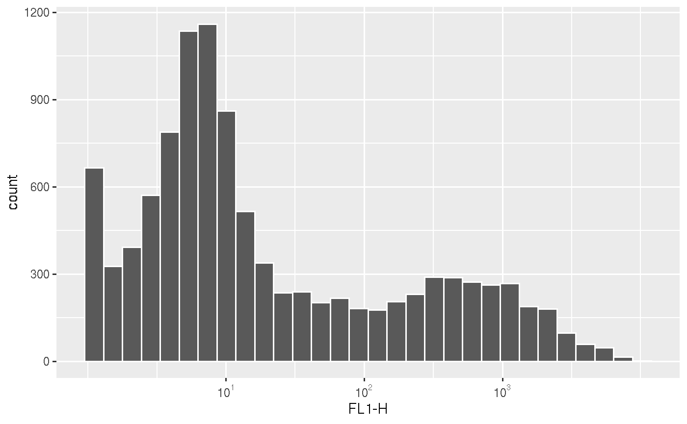
# remove marginal events p + scale_x_logicle(t = 1e4, w = 0, breaks = myBreaks, limits = c(2, 1e4))
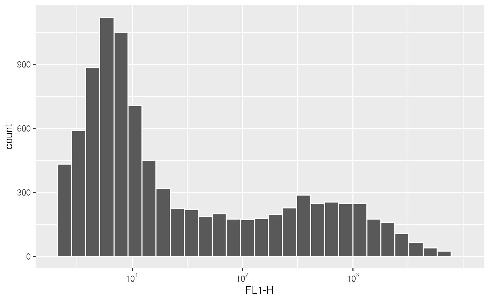
# other scales: flowJo_fasinh, flowJo_biexp p + scale_x_flowJo_fasinh(t = 1e4)
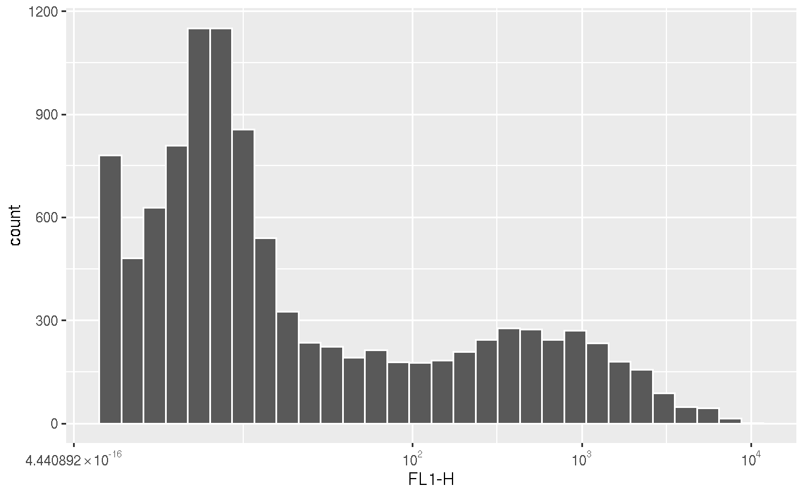
p + scale_x_flowJo_biexp(maxValue = 1e4, widthBasis = 0)
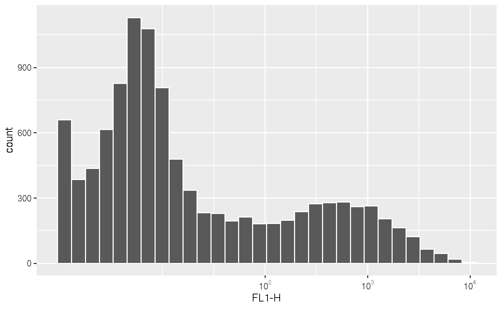
# save the scales # myScales <- scale_x_flowJo_biexp(maxValue = 1e4, widthBasis = 0) # density (default y is density) p <- ggplot(fr, aes(x = `FL1-H`)) p + geom_density() + scale_x_log10()
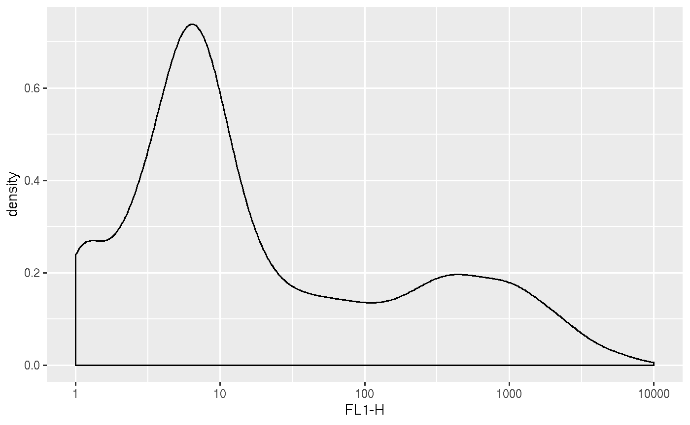
# display area p + geom_area(stat = "density") + scale_x_log10()
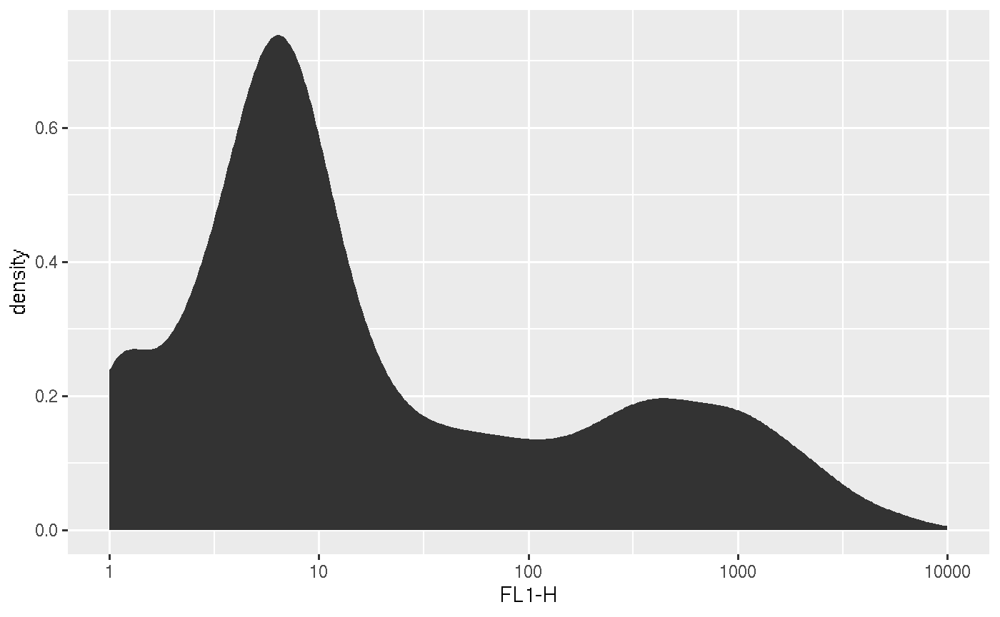
# display y as count p + geom_area(stat = "density", aes(y = ..count..))+ scale_x_log10()
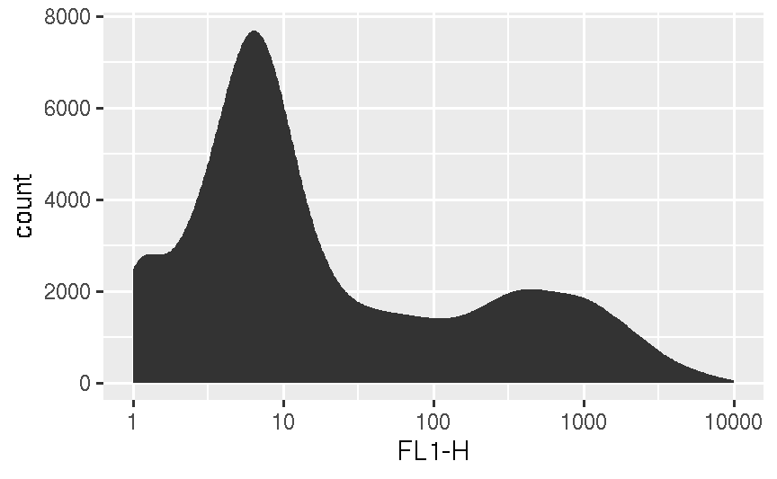
# histogram + density line ggplot(fr, aes(x = `FL1-H`, y = ..density..)) + geom_histogram(colour = "white") + geom_density(color = "red") + scale_x_log10()
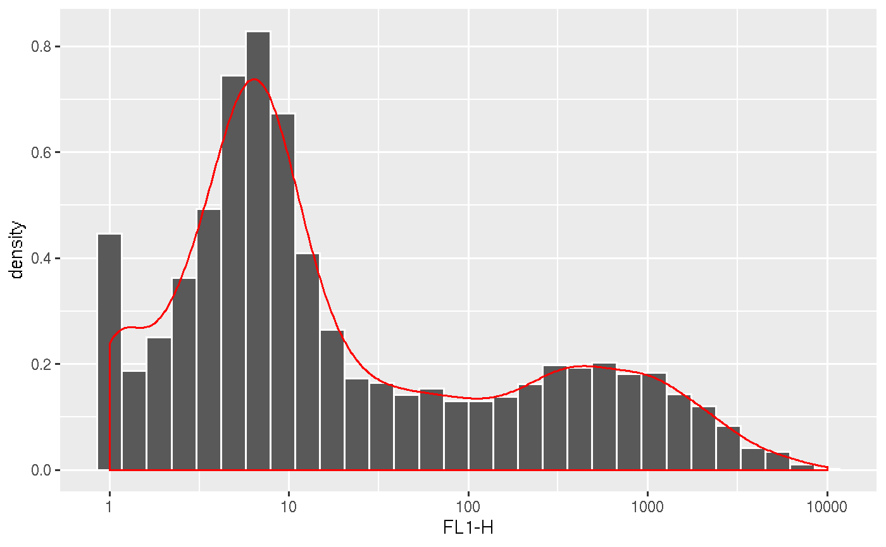
# plot multiple samples p <- ggplot(fs, aes(x = `FL1-H`)) + geom_area(stat = "density")+ scale_x_log10() # facetting by sample names p + facet_wrap(~name)
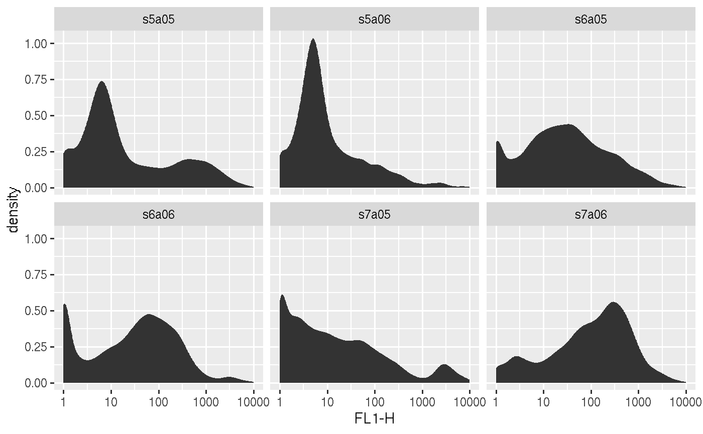
# faceeting by other pheno data stored in fs p + facet_grid(Patient~Visit)
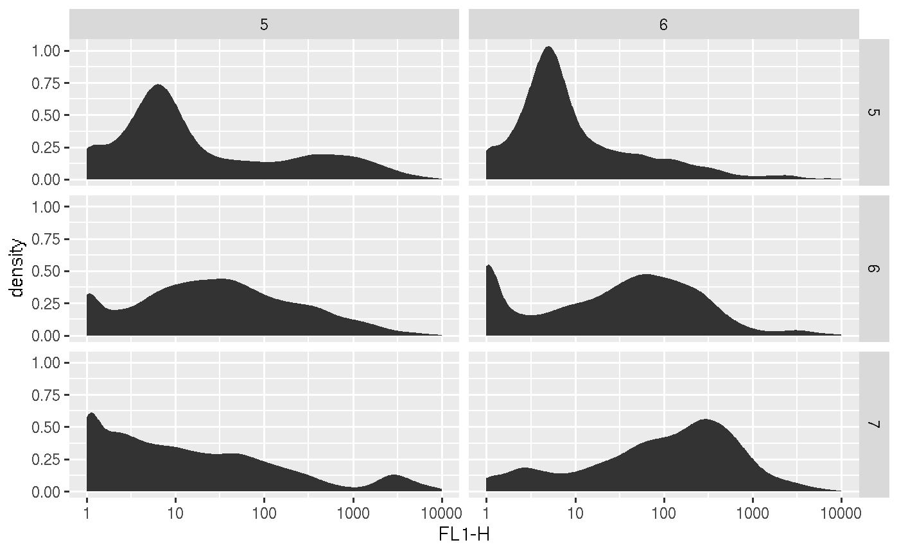
# fill with different colors ggplot(fs, aes(x = `FL1-H`, fill = name)) + facet_wrap(~name) + geom_density(alpha = 0.2)+ scale_x_log10()
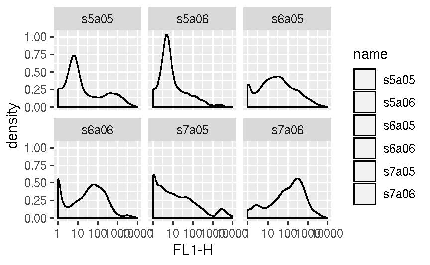
# or plot in the same panel ggplot(fs, aes(x = `FL1-H`, fill = name)) + geom_density(alpha = 0.2) + scale_x_log10()
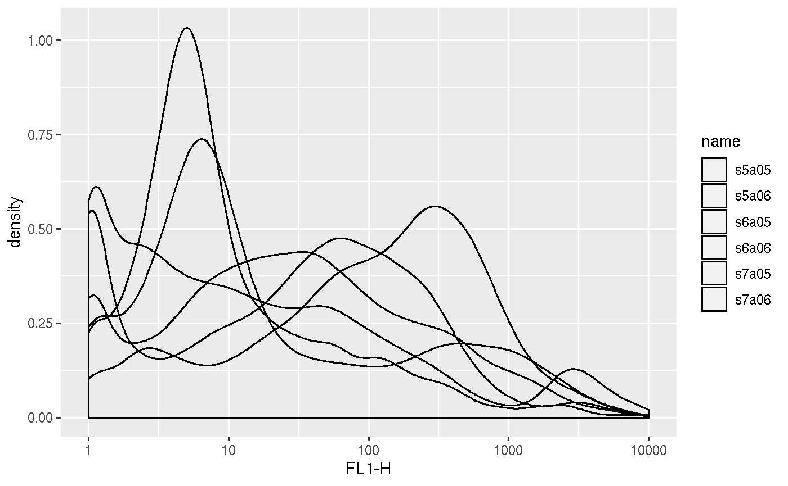